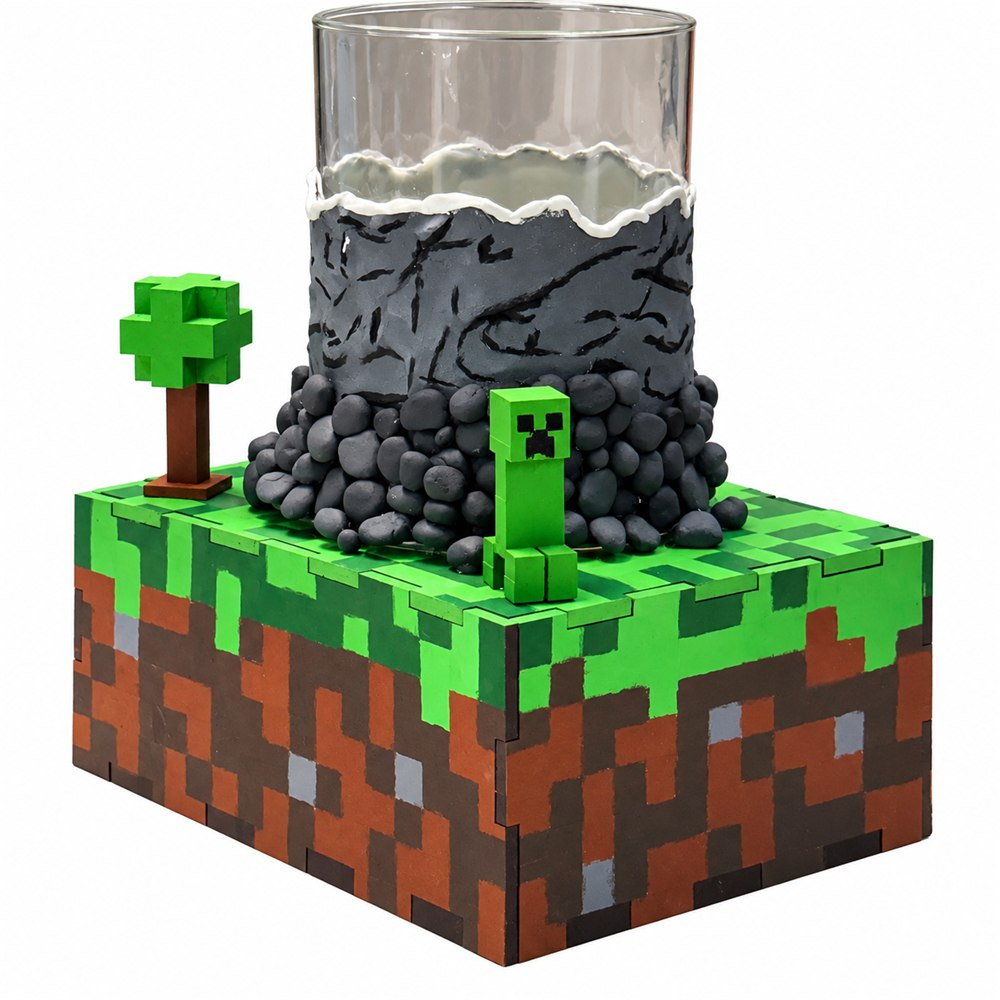

BioCraft: Construindo um Futuro Mais Verde
Tecnologia inteligente que transforma espaços urbanos em ambientes mais sustentáveis, conectados e saudáveis.
Tecnologia que respira
Pequenas algas, grande efeito. A BioCraft cria árvores-líquidas que ajudam a deixar o ar das cidades mais leve.
Uma árvore feita de água e algas
A árvore-líquida é um tanque de vidro cheio de água e microalgas. Com a luz, as algas fazem o mesmo que as folhas de uma árvore: absorvem o gás carbônico (CO₂) do ar e liberam oxigênio.
Ela ocupa pouco espaço, então pode ficar onde não cabe uma árvore convencional. Nossa unidade, a BC-01, também tem sensores que mostram a qualidade do ar.
Conectado ao projeto físico
Os sensores instalados na unidade física coletam dados ambientais que aparecem neste painel.
Do físico ao digital.
O BioCraft está sendo desenvolvido por uma equipe de 8 estudantes da FIAP School. Nosso objetivo é unir tecnologia, sustentabilidade e criatividade em um projeto construído do zero.
Uma ideia construída por nós
Desde a concepção até o protótipo físico e o sistema digital, cada parte do BioCraft está sendo planejada, construída e desenvolvida pela nossa equipe.
O projeto conecta um ambiente físico equipado com sensores a uma plataforma digital que mostra as informações ambientais de forma visual e interativa.

Uma ideia que saiu do papel e ganhou forma física: uma árvore-líquida sobre um bloco de grama, com Creeper e tudo.
“Não começamos com uma solução pronta. Construímos o BioCraft do zero.”
FIAP SCHOOL · BIOCRAFT
Construa um futuro sustentável
Tome 7 decisões no comando da BioCraft Industries. O segredo é o equilíbrio. Se a economia ou o planeta ficar muito para trás, o totem se desfaz.
BioCraft Industries
Vamos construir um futuro mais verde?
Entre em contato com a BioCraft e descubra como podemos transformar o seu espaço.